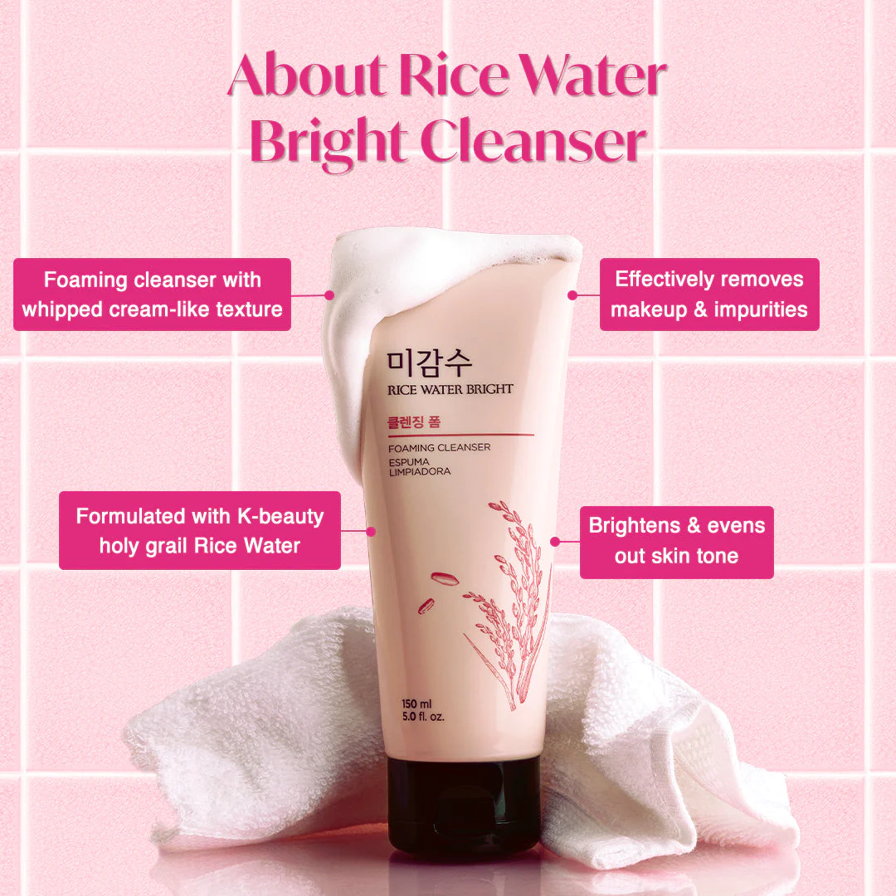
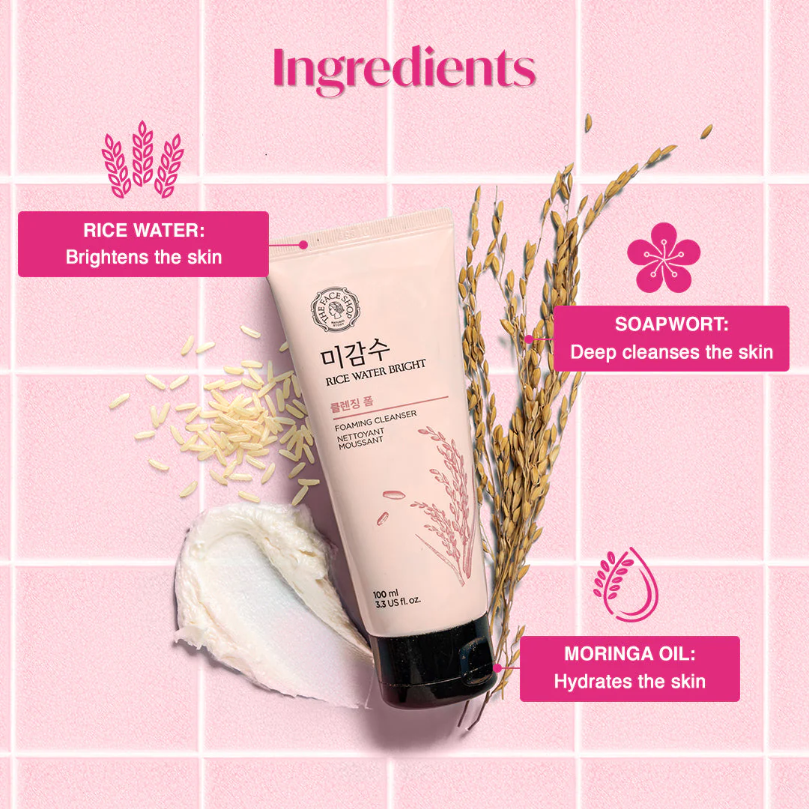
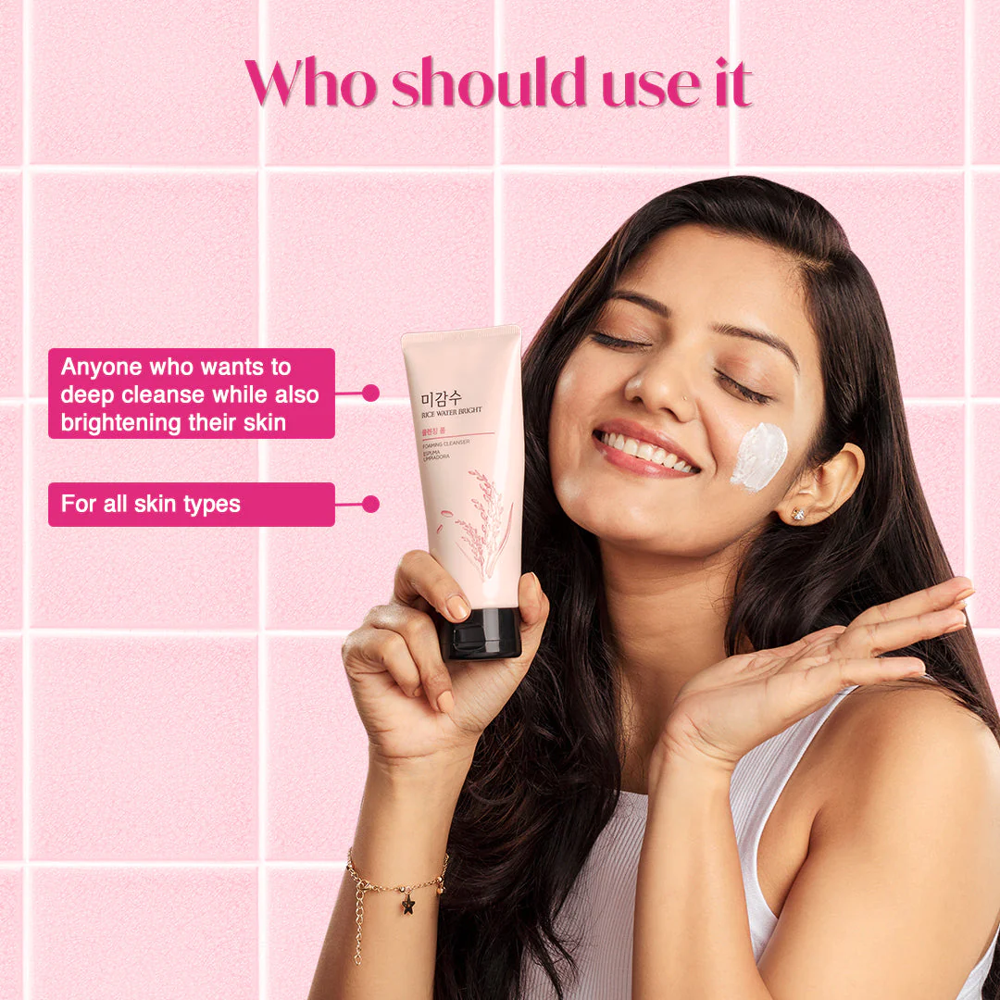
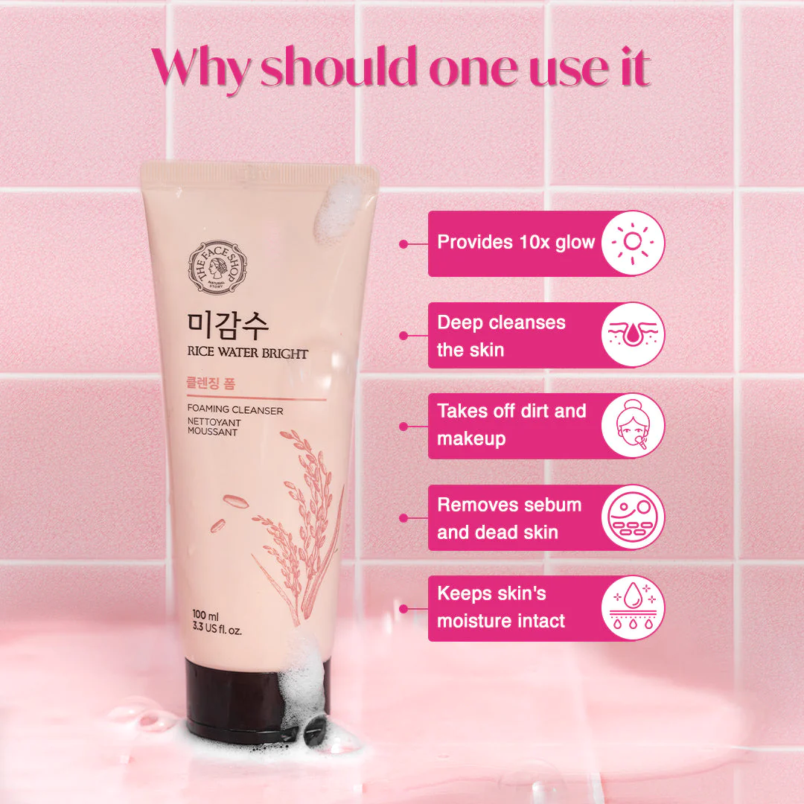

The Face Shop Rice Water (100ml)
Rs:500
The Rice Water Bright Cleansing Foam is a gentle and effective facial cleanser designed to provide a thorough cleanse while maintaining the skin's natural balance. Formulated with rice water, a traditional ingredient known for its brightening and cleansing properties, this foam cleanser helps to remove impurities, makeup, and excess oil from the skin's surface.
Key Features:
- Deep Cleansing: The foam creates a rich lather that deeply cleanses the skin, removing dirt, makeup, and other impurities.
- Brightening Properties: Rice water is known for its brightening effects, leaving the skin looking radiant and refreshed.
- Balancing Formula: Despite its powerful cleansing properties, the formula is designed to be gentle on the skin, maintaining its natural moisture balance.
- Suitable for All Skin Types: The gentle formulation makes it suitable for various skin types, including sensitive skin.
- Refreshing Scent: Often, rice water-based products have a mild and pleasant fragrance that enhances the overall skincare experience.
How to Use:
- Wet your face with water.
- Dispense an appropriate amount of the cleansing foam.
- Lather the foam in your hands and apply it to your face, massaging gently.
- Rinse thoroughly with water.
- Including a rice water-based cleansing foam in your skincare routine can contribute to a clean, bright complexion. It's essential to follow up with the rest of your skincare routine, including toner and moisturizer, to keep your skin hydrated and nourished.